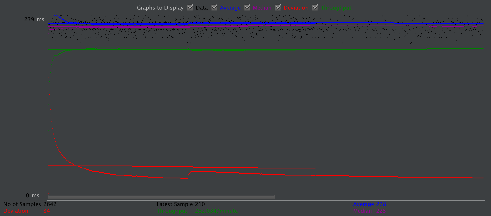
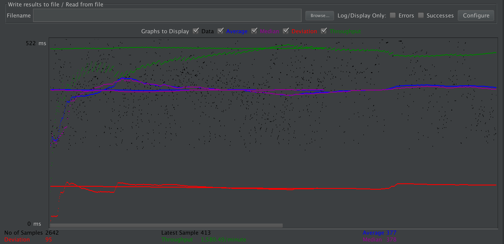
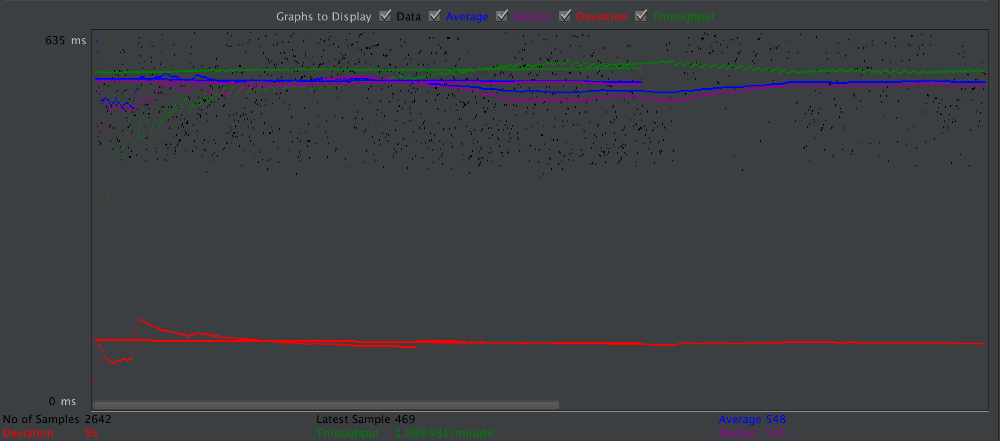
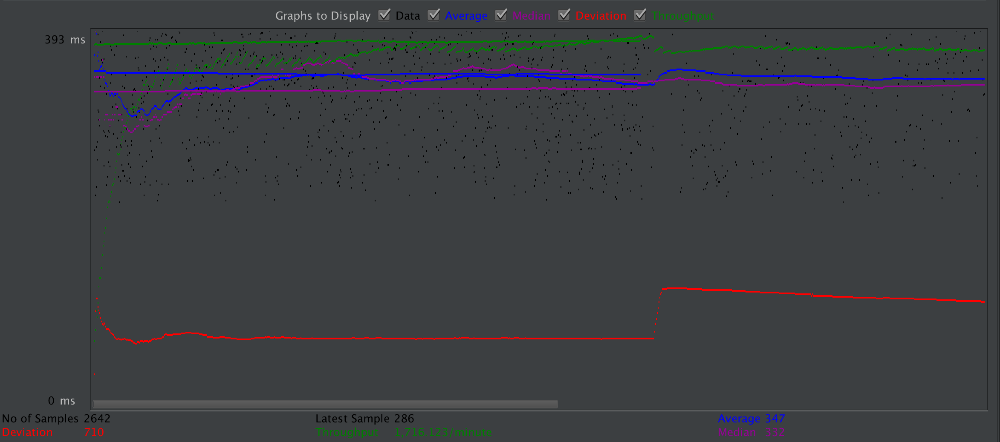
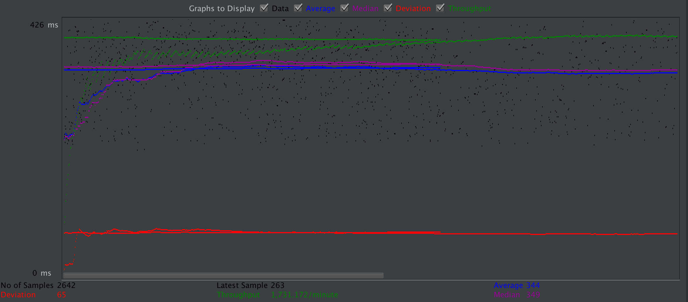
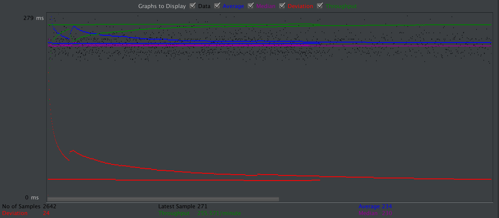
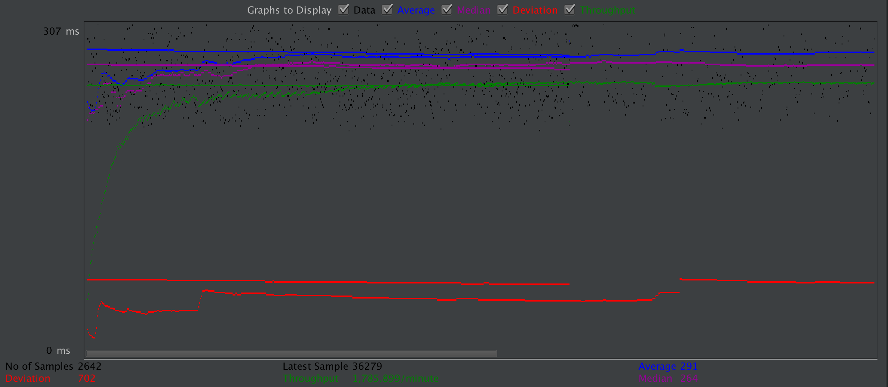
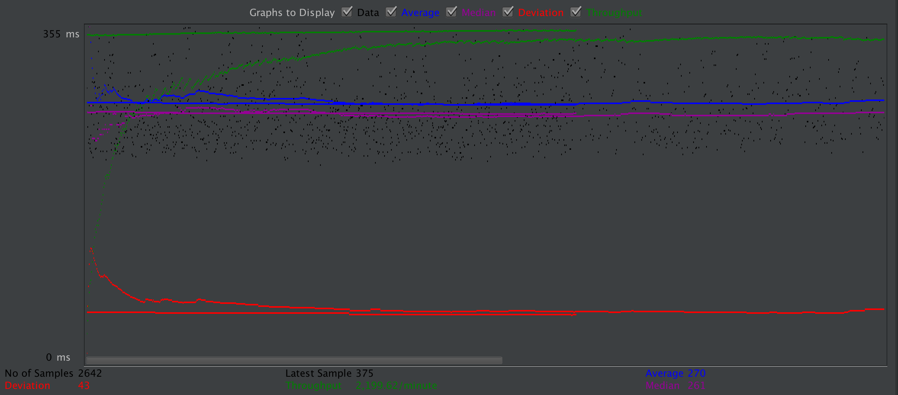
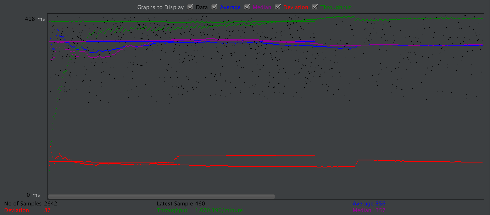

| Single-instance version cases | Graph Results Screenshot | Average Query Time(ms) | Average Search Servlet Time(ms) | Average JDBC Time(ms) | Analysis |
| Case 1: HTTP/1 thread |  | 228 | 26.578026224072672 | 25.999607386071157 | The average query time was within our expectation. Since there's only one thread, the time is relatively short. |
| Case 2: HTTP/10 threads |  | 377 | 149.85338719303557 | 148.08806629788038 | The average query time was unexpected. This case should be faster than case 4 and case 5. We think the reason might be that we had to go through all user inputs twice for prepared statements (oncee for query construction, and once for filling in the actual inputs). Thus, the extra time it takes to process the code offsets the time prepared statements and connection pooling save. |
| Case 3: HTTPS/10 threads |  | 548 | 129.76322352838759 | 127.18865471915215 | The average query time was within our expectation. HTTPS requests usually take longer time than HTTP requests. |
| Case 4: HTTP/10 threads/No prepared statements |  | 347 | 113.14833928046934 | 111.78557877062832 | The average query time was within our expectation. This case should be slower than case 2, but due to the reason stated in case 2, it's actually faster. |
| Case 5: HTTP/10 threads/No connection pooling |  | 344 | 127.28087993830432 | 122.62052073012869 | The average query time was within our expectation. This case should be slower than case 2, but due to the reason stated in case 2, it's actually faster. |
| Scaled version cases | Graph Results Screenshot | Average Query Time(ms) | Average Search Servlet Time(ms) | Average JDBC Time(ms) | Analysis |
| Case 1: HTTP/1 thread |  | 234 | 26.978307445495836 | 26.213220520817563 | The average query time was unexpected. This case should be faster than case 1 of the single-instance version. We think the reason might be that the use case of a single user (one thread) has uncertainty. |
| Case 2: HTTP/10 threads |  | 291 | 55.434332618470855 | 54.57051755715367 | The average query time was unexpected. This case was substantially faster than case 2 of the single-instance version, which is expected. However, it should be faster than case 3. We think the reason might be that we had to go through all user inputs twice for prepared statements (oncee for query construction, and once for filling in the actual inputs). Thus, the extra time it takes to process the code offsets the time prepared statements save. | /td>
| Case 3: HTTP/10 threads/No prepared statements |  | 270 | 54.099082828538984 | 52.88044034405753 | The average query time was within our expectation. This case was faster than case 4 of the single-instance version, which is expected. However, it should be slower than case 2, but due to the reason stated in case 2, it's actually faster. |
| Case 4: HTTP/10 threads/No connection pooling |  | 356 | 129.07003508213475 | 123.2236666029523 | The average query time was unexpected. This case was slower than case 2, which is expected. However, it should be faster than case 5 of the single-instance version. We think the reason might be that the time for load balancer to process requests offsets the time load balancer saves. |